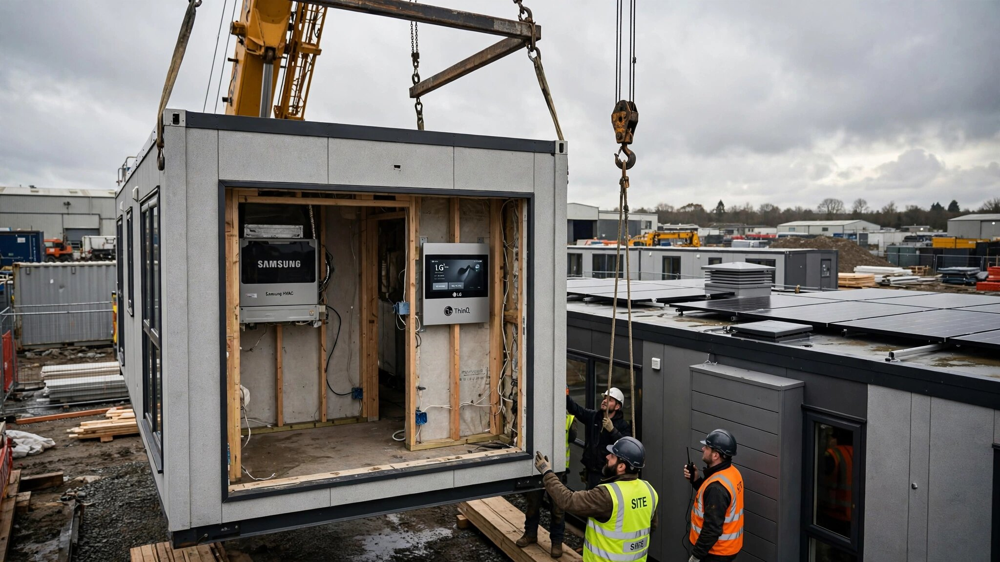

July 6, 2026 • By Frank DeLuca
Samsung Spent $1.7 Billion to Control Your Home's Climate System. LG Already Sells the Whole House for $134,000.

Last May, Samsung Electronics wrote a check for 1.5 billion euros to acquire FläktGroup, a German HVAC manufacturer founded in 1918 that supplies climate systems to data centers, hospitals, airports, and residential buildings across Europe. It was Samsung's largest acquisition since the $8 billion Harman deal in 2017. Two months earlier, Samsung had launched a joint venture with Lennox International, the third-largest HVAC company in North America. By June 2026, KED Global reported that both Samsung and LG were targeting what analysts sized as a $176 billion global smart housing sector, with ambitions that went well beyond selling refrigerators into kitchens somebody else built.
LG wasn't waiting for the market to mature, because by October 2024 it had already shipped product to paying customers.
A $134,000 House That Produces More Power Than It Consumes
LG launched the Smart Cottage as a factory-built modular home starting at 180 million Korean won, roughly $134,000, with more than 70% of each unit prefabricated in a controlled facility, cutting construction timelines by over half compared to conventional methods. LG partnered with GS Engineering & Construction Corp for the structural work and POSCO for low-carbon steel framing.
But the structure is almost beside the point. What makes the Smart Cottage unusual is that LG designed it as a consumer electronics product that happens to be a house.
Every system talks to every other system through LG's ThinQ platform: the Therma V Monobloc air-to-water heat pump, a 200-liter integrated water tank, an induction cooktop, a lightwave oven, a WashTower laundry unit, motion sensors, smart doorbells, security cameras, and a StanbyME display that serves as the central control surface. Rooftop solar panels generate roughly 15 kWh per day from a 4 kW array, an onboard energy storage system banks the surplus, and an EV charger comes standard.
The Mono Plus 26 model achieved something that most custom homes in the United States cannot claim at any price point: an energy self-sufficiency rate exceeding 120%, meaning the house generates more power than it uses across a full year. It was the first prefabricated structure in Korea to earn ZEB Plus certification from the Korea Energy Agency. Four units are now deployed at the Juksan Morak experience site, where guests can book stays and see what it feels like to live inside an appliance company's idea of a home.
LG also partnered with the Korea Electrical Safety Corporation to pre-certify electrical systems during factory production, not after installation on site. If you've ever waited three weeks for an electrical inspection that found two violations your electrician then took another week to correct, you understand why that matters.
Samsung's Vertical Integration Play
Samsung's approach is different in execution but identical in strategic direction. Rather than building complete houses, Samsung is assembling control over the systems that make houses work.
FläktGroup brought Samsung Europe's largest HVAC supplier, with roughly 700 million euros in annual revenue and an installed base spanning data centers, cleanrooms, commercial buildings, and residential developments. TM Roh, Samsung's acting head of the DX division, described the acquisition as laying "the foundation to become a leader in the global HVAC business." The data center cooling segment alone is projected to grow at 18% annually through 2030, driven by the power demands of generative AI infrastructure.
Add the Lennox joint venture covering North America, and Samsung now has manufacturing, distribution, and service capabilities for climate control across three continents, plus something that no traditional HVAC manufacturer possesses: a consumer AI platform with hundreds of millions of connected devices already in homes and the software engineering capacity to make those devices coordinate.
In Samsung's AI modular house concept, demonstrated in June 2026, the AI-powered refrigerator recommends wine pairings, the door camera identifies unfamiliar visitors in real time, a robotic vacuum patrols for anomalies, and the climate system calibrates temperature and humidity based on occupancy patterns. These are not concepts. Samsung manufactures every component in that sentence.
What American Builders Are Actually Doing With AI
One percent.
That's the share of U.S. single-family home builders who use AI to operate construction equipment, according to the NAHB/Wells Fargo Housing Market Index survey from July 2025. The broader number looks better: 49% of builders report using AI "in some capacity." But capacity is doing a lot of work in that sentence. Twenty percent use it for advertising and marketing. Eleven percent use it for market analysis and planning. One percent uses it to run machines.
When NAHB asked builders to rate the likelihood of adopting AI for equipment operation on a 1-to-5 scale over the next two years, the average response was 1.7. That's not hesitation. That's a shrug.
ServiceTitan's 2026 Residential State of Trades report, surveying 1,000 contractors, found broadly similar patterns at a different altitude. Seventy-four percent of residential contractors view AI as an efficiency engine, but only 25% are actually using it. Among those who are, 48% report increased productivity and 45% report time savings, which is encouraging until you consider the denominator: that's 48% of 25%, meaning roughly 12% of all residential contractors report that AI has made them more productive. The top barriers are lack of training and integration complexity, both cited by 44% of respondents.
RICS reported in 2025 that 45% of construction organizations globally have no AI implementation at all, with 34% in early pilot phases and just 1.5% using AI across multiple processes. Less than one percent have embedded AI organization-wide.
Grace Tsao Mase, a Yale-trained architect with three U.S. patents and a multi-state contractor license, published a 246-page book through NAHB's BuilderBooks in March 2026 arguing that builders using AI can complete projects up to 30% faster. I don't doubt her math. But when the industry survey shows that most of that 49% adoption figure is builders using ChatGPT to write listing descriptions, the 30% faster claim describes a ceiling that almost nobody is close to reaching.
Why the Appliance Companies Have an Advantage You Don't
I've run construction projects for twenty-two years. A custom home is a coordination problem across 20 to 30 independent subcontractors, each with their own schedule, their own supply chain, and their own definition of "Tuesday." The general contractor's job is to impose order on that chaos, and the reason it's hard is that every project is effectively a prototype built by a temporary organization that dissolves when the certificate of occupancy arrives.
LG's factory eliminates that organizational problem entirely. There are no subs to coordinate, because the factory employs the workers who build the modules. There is no weather delay, because the factory has a roof. There is no inspection bottleneck at rough-in, because the electrical systems were pre-certified before the modules left the production line. The 70% prefabrication rate means that site work is assembly, not construction, and assembly follows a sequence that was engineered once and repeated for every unit.
Samsung's approach works differently but solves a similar problem. By controlling the HVAC, the appliance ecosystem, and the AI coordination layer, Samsung can offer builders and developers a turnkey mechanical and smart-home package that arrives pre-integrated. Instead of a GC coordinating the HVAC installer, the electrician who wires the thermostat, the low-voltage sub who runs the security cameras, and the homeowner who buys a smart speaker from a different vendor, Samsung delivers one system where every component already communicates with every other component, because Samsung built all of them.
Neither LG nor Samsung has the construction expertise that a seasoned GC possesses. They don't understand soil conditions, local code variations, the social dynamics of a framing crew that's been together for six years, or the thousand small judgments that a superintendent makes walking a job site before the concrete truck arrives at seven in the morning. But they understand manufacturing at scale, supply chain management, and product integration at a level that no builder in the residential sector can match, and the question is whether those capabilities matter more in the next decade than the ones builders have now.
Federal Money Is Moving in the Same Direction
In June 2026, HUD opened applications for a $10 million demonstration program formally titled "Mass Market Solutions for Leveraging Robotics and AI Technologies for Home Construction," alongside a separate $3 million allocation targeting automated permitting systems, with applications closing July 13, 2026, a minimum award of $3 million, and selections expected by September.
The language in the program description is worth reading closely. HUD wants "technologies that can move beyond a single pilot and be scaled for wider use, contributing to long-term increases in housing supply." That's not research funding. That's deployment funding. HUD is betting that factory-built, robotics-assisted housing is ready to leave the lab.
They may be right, because the labor economics underlying factory-built housing are hard to argue with. NAHB's Fall 2025 Construction Labor Market Report puts the annual cost of the skilled labor shortage at $10.8 billion, with 19,000 homes per year not built because the workers to build them do not exist. The residential construction workforce stands at 3.3 million payroll workers, immigrants now represent 25.5% of that total at a historic high, and Gen Z participation has doubled from 6.4% in 2019 to 14.1% in 2023, which is encouraging but insufficient to close the gap.
A factory that can build 70% of a home with a stable, trained workforce producing repeatable modules on an assembly line that runs regardless of whether it rained last Tuesday solves the labor problem at the source. It doesn't need to find a framer who can work next Thursday. It employs the framer year-round.
The Graveyard Is Real
Before anyone gets too excited, the recent history of factory-built housing in the United States is a series of expensive funerals. Katerra raised $2 billion, vertically integrated everything from lumber mills to architecture, and filed for bankruptcy in 2021. Veev raised $647 million for its panelized factory system and shut down in 2024. Both companies discovered the same thing. Manufacturing homes is not the hard part. Navigating local building codes, last-mile logistics, site prep variability, and the regulatory patchwork of 3,000 different jurisdictions is the hard part.
LG and Samsung have advantages that Katerra and Veev did not, principally the balance sheet depth to absorb years of losses and the existing manufacturing infrastructure to produce at scale. But they also have a disadvantage: neither company has built a single home in the United States. The Smart Cottage exists in Korea, where building codes, labor markets, and consumer expectations are fundamentally different. Samsung's HVAC play is global, but its modular house concept is exactly that: a concept.
The pattern I've seen in twenty-two years of project management is consistent: the company that understands the problem on paper is not always the company that can execute in the field. Understanding climate control engineering does not mean you understand the permit office in Broward County or the union dynamics in Cook County. Manufacturing at scale doesn't help when the site access road can't support a flatbed carrying a 12-foot-wide module.
What This Means If You Build Houses
If you're a production builder doing $50 million or more annually, Samsung's Lennox JV combined with the FläktGroup acquisition means Samsung will control HVAC supply from factory to installed unit across Europe and North America. If you're spec'ing Samsung or LG HVAC equipment now, the question worth asking your rep is whether their company plans to prioritize inventory allocation for its own modular housing products over your custom orders. They won't answer honestly, but ask anyway. Watch their face.
If you're a modular or prefab startup, LG's $134,000 price point with 120% energy self-sufficiency is the benchmark your factory now has to meet. Not in five years. Now. LG's ThinQ integration also means prospective buyers will compare your product to a home where every appliance, every sensor, every climate system, and the solar array communicate through a single platform out of the box. If your modular home ships with a Honeywell thermostat, a Ring doorbell, and a GE range that don't talk to each other, you have a product gap that no marketing will close.
If you're a custom builder, HUD's $10 million robotics demonstration is real money for companies already doing panelized or offsite work, with applications closing July 13 and a minimum award of $3 million. Even if you don't win, the federal validation will shift private capital toward factory-built housing, and that capital will eventually compete for your buyers.
If you're a homeowner planning a build, ask your builder what their AI strategy is. If the answer is "we use it for marketing," you've learned something about where your per-square-foot costs are headed over the next five years compared to a factory alternative that doesn't need to find 22 subcontractors who can all show up the same month.
Limitations
LG's Smart Cottage pricing, specifications, and energy performance data come from Korean market launches and Korean certification bodies. Performance in U.S. climate zones, under U.S. building codes, with U.S. utility rate structures has not been demonstrated. The 120% energy self-sufficiency figure is an annual average for the Korean climate where the units are deployed and would vary significantly by location, orientation, and occupancy pattern in other markets.
Samsung's FläktGroup acquisition and Lennox JV are real, but their application to residential modular housing is projected, not demonstrated. Not a single Samsung-built home exists. The $176 billion smart housing sector figure cited by KED Global is an analyst projection with methodology I was unable to independently verify.
The NAHB survey data on AI adoption covers single-family builders specifically, while the ServiceTitan data covers residential contractors more broadly, including trades. The two samples overlap but are not identical, and direct comparisons between their adoption figures should be made carefully. Katerra's and Veev's failures involved factors specific to their business models, management, and market timing; their outcomes do not prove that all factory-built housing ventures will fail, only that capital and engineering are insufficient without execution in the regulatory and logistical environment.
Frank DeLuca has spent twenty-two years managing construction projects and watching the industry find increasingly creative ways to avoid the operational changes it needs most.